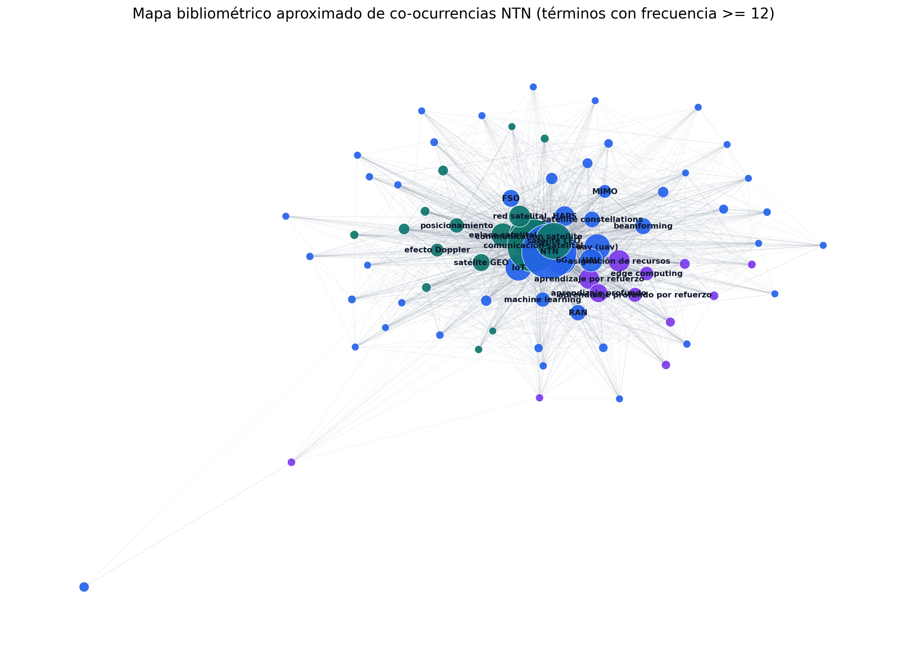
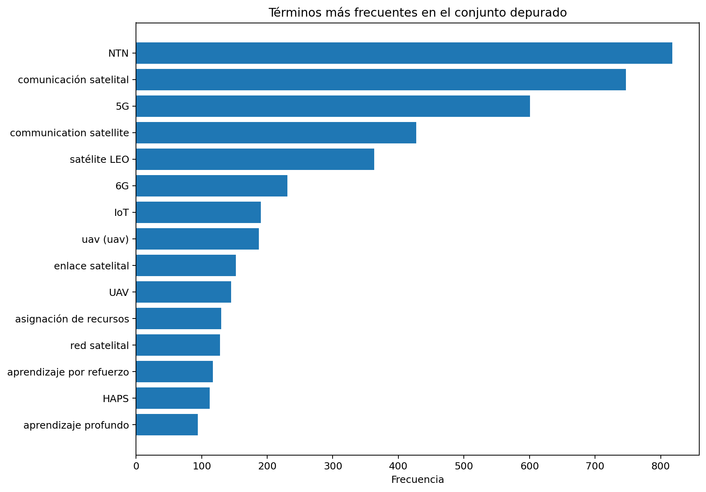

Tema
NTN en contexto
Las Non-Terrestrial Networks integran satélites, plataformas aéreas y redes terrestres para ampliar cobertura, resiliencia y continuidad del servicio en comunicaciones digitales.
BlogDPC · Comunicaciones II · Reto ABET SO7
Las Non-Terrestrial Networks integran satélites, plataformas aéreas y redes terrestres para ampliar cobertura, resiliencia y continuidad del servicio en comunicaciones digitales.



Exploración interactiva
Cambia entre pestañas para recorrer la metodología, resultados, clústeres, palabras y reflexión sin depender de un scroll largo.
| Término | Frecuencia | Motivo |
|---|
Busca por término o por clúster para abrir las tarjetas de análisis con relaciones, fuerza de asociación e interpretación temática.

Herramienta interactiva
Modifica parámetros y observa el efecto sobre pérdida en espacio libre, potencia recibida, margen de enlace y estimación Doppler.
Socialización
Rigor académico